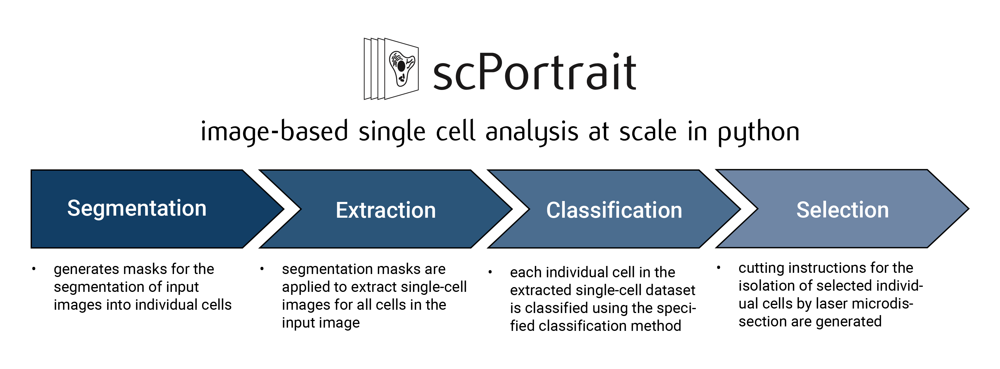

scPortrait Workflow
scPortrait is a toolkit to analyse single-cell image datasets. This Python implementation efficiently segments individual cells, generates single-cell datasets and provides tools for the efficient deep learning classification of their phenotypes for downstream applications.
The scPortrait computational workflow consists of upto four steps: Segmentation, Extraction, Classification and Selection and is designed to be modular and flexible.
{kind=link}
In scPortrait, all operations are centerd around the concept of a scPortrait Project. A scPortrait Project is a python class which manages the entire computational workflow. For each processing step, a specific method class is assigned which is called by the scPortrait Project to process the input images and generate the desired output which is saved to disk in a standardized format. Using a plug and play approach, a specific analysis workflow can be construted by specifying different method classes for each of the processing steps.
scPortrait is designed around the concept of class inheritance. Class inheritance is a fundamental object-oriented programming concept that allows a new class (subclass or derived class) to inherit attributes and methods from an existing class (superclass or base class). Using this concept, scPortrait provides a base implementation for each processing step. This base class can then be extended by subclasses which modify the behavior of this specific step without needing to reimplement shared processes. So for example, a new segmentation class with a new segmentation algorithm only needs to provide an updated method for calculating the segmentation mask, but can utilize the rest of the segmentation framework, like loading or saving data, already provided by the base class. Using class inheritance ensures that the computation workflow is extensible and flexible, while at the same time providing a stardardized framework for each processing steps.
{kind=link}
Inheritance Hierarchy of scPortrait classes
For a short overview of each step in the scPortrait workflow please refer to our short guide here. In this section we will discuss each of the processing steps in more detail.